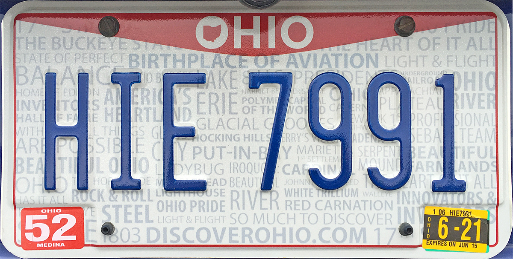

Opinion | Do the Wright brothers deserve all the credit they receive?
Beginnings
26 October 2020
Ask the average person what the Wright brothers were known for, and they will almost certainly tell you that they invented the airplane. Chances are, they’ve never heard of Armen Firman, George Cayley, Octave Chanute, Samuel Langley, or any other aviation pioneer. The Wright brothers get all the credit. Do they deserve it?
Most historians agree that the Wright brothers were indeed the first to sustain a powered heavier-than-air aircraft in flight. This is a very specific achievement. To say that the Wright brothers invented the airplane is an oversimplification.
Without any prior context or knowledge of the many aviation pioneers who came before the Wright brothers, it’s quite easy to come up with the notion that the Wright brothers suddenly got the idea to fly and just made it work. The truth is far from that.
The Wright brothers would not even have considered trying to fly had Wilbur not heard of Otto Lilienthal’s death in a gliding accident. Wilbur and Orville themselves acknowledged the crucial role others played in their success:
Otto Lilienthal, who was the primary inspiration for the Wright Brothers. Image via Library of Congress.
It was not till the news of the sad death of Lilienthal reached America in the summer of 1896 that we again gave more than passing attention to the subject of flying. We then studied with great interest Chanute’s “Progress in Flying Machines,” Langley’s “Experiments in Aerodynamics,” the “Aeronautical Annuals” of 1905, 1906, and 1907, and several pamphlets published by the Smithsonian Institution, especially articles by Lilienthal and extracts from Mouillard’s “Empire of the Air.” The larger works gave us a good understanding of the nature of the flying problem, and the difficulties in past attempts to solve it, while Mouillard and Lilienthal, the great missionaries of the flying cause, infected us with their own unquenchable enthusiasm, and transformed idle curiosity into the active zeal of workers.
A closeup of one of the Wright Airplanes, taken in 1911. Image via Library of Congress.
It’s clear that the Wright brothers were able to stand on the shoulders of the giants who came before them, which enabled them to learn from their mistakes, try their designs, and otherwise gain from several decades of knowledge available to them.
And let’s not forget that the Wright brothers spent years fighting over patent rights, trying to make the Curtiss Company stop producing airplanes. Sure, they were the inventors, but was that really necessary? It leads to the question of who science belongs to. Should advances in science be made public to everyone? There’s no denying that when scientific achievements are made very public, it opens up the opportunity for others to review their work and improve upon it.
Prior to the Wright brothers, aviation pioneers (see: Octave Chanute) were very open and transparent about their work, and tried to make their resources as available as possible. Recall that Wilbur Wright personally wrote to the Smithsonian institution to request their materials on flight. Needless to say, the Wright brothers would have gotten nowhere had they not had those resources available to them. So should they have been so secretive about their achievements? It certainly seems selfish. And had they asked Mr. Curtiss cordially to respect their rights to their invention, the situation may very well have turned out productive for all parties. Instead, they engaged in years of lawsuits and court battles.
Not to diminish the success that we know the Wright brothers had, we need to stop perpetuating the image of the Wright brothers as amazing miracle workers who never did anything wrong. Too often in history, we see people for a single aspect of their entire lives. We can’t know everything about everyone, and that is usually fine. But when it comes to the Wright brothers whom we give so much credit and recognition to, we need to take a more well rounded view to their lives in order to get a better understanding of aviation as a whole.
In 2018, The News Wheel, an automotive news website, published an article arguing that North Carolina should not have the slogan “first in flight” on its license plates. It turns out that there’s a long-standing dispute between Ohio and North Carolina: Ohio license plates are printed with “birthplace of aviation”. In truth, this argument is petty and stupid. Neither of these states deserve to have any of these phrases on their license plates. Although the Wright brothers lived in Dayton, Ohio for much of their lives and flew their first powered flight in Kitty Hawk, that doesn’t make North Carolina “first in flight” or Ohio the “birthplace of aviation”. Those titles are far too vague and belong to other 19th century aviation pioneers who aren’t the Wright brothers.

1. North Carolina license plate. Image © David Nicholson. 2. Ohio license plate. Image © Corb Moister.
References
- McCullough, David. The Wright Brothers. United Kingdom: Simon & Schuster, 2015.
- Wright, Wilbur, and Orville Wright, photographer. Close-Up View of Airplane, Including the Pilot and Passenger Seats. , 1911. Photograph. https://www.loc.gov/item/2001696621/.
- Wright, Wilbur., Wright, Orville. The Early History of the Airplane.
- "The Wilbur and Orville Wright Timeline, 1846 to 1948". Library of Congress. https://www.loc.gov/collections/wilbur-and-orville-wright-papers/articles-and-essays/the-wilbur-and-orville-wright-timeline-1846-to-1948/.